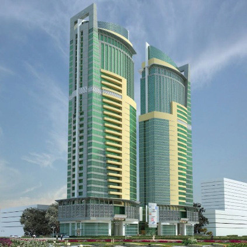

Learning words that mean the same
Read the passage and look at the pictures of buildings to answer the questions that follow.
Did you know that many words in English can mean the same thing?
These are called synonyms.
For example, "big" and "large" are synonyms because they both describe something of great size.
Learning synonyms helps you enrich your vocabulary, make your speaking and writing more interesting, and say the same thing in different ways.

Source: TIC-Tanzania Investment Guide 2013Questions
1. What do you see in the picture?
2. What word can be used to describe the height of those buildings?
3. What other words mean the same as the word used to answer question 2 above?
4. What is the technical term for words that mean the same or almost have the same meaning?
Words with the same or almost identical meanings are known as synonyms.
big – large – huge
happy – joyful – glad
fast – quick – speedy